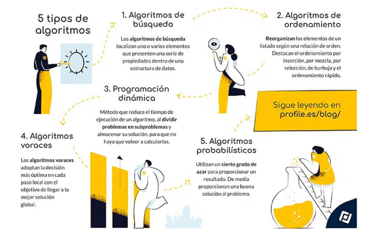

| DEFINICION |
Existen diversas clasificaciones de algoritmos, en función de diferentes criterios. Según su sistema de signos (cómo describen los pasos a seguir), se distingue entre algoritmos cuantitativos y cualitativos, si lo hacen a través de cálculos matemáticos o secuencias lógicas. Asimismo, si requieren o no el empleo de un ordenador para su resolución, se clasifican en computacionales y no computacionales.
Pero, si nos fijamos en su función (qué hace) y su estrategia para llegar a la solución (cómo lo hace), encontramos muchos más tipos de algoritmos. Destacamos los siguientes cinco tipos de algoritmos informáticos:

|